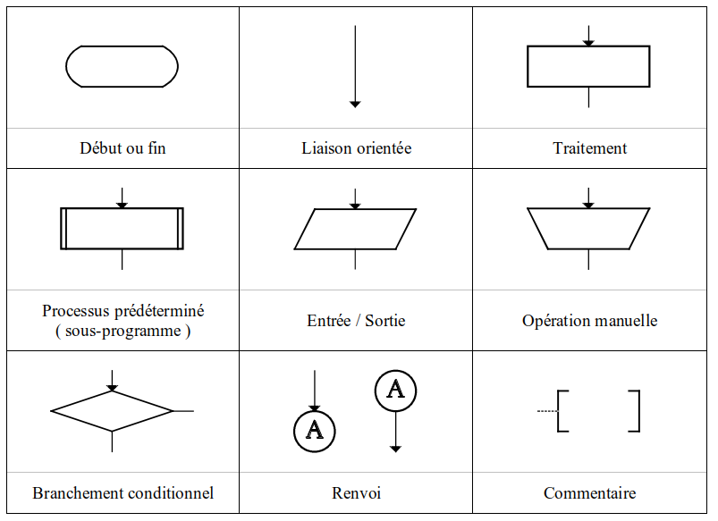

R2-ALGO-01 : Révision Algorithmes 1M#
Objectifs pédagogiques#
consolider les concepts algorithmiques nécessaires à la 2M
début et fin
liaison
instruction
condition
sous-programme
entrées
sorties
Caractéristiques des algorithmes#
Un algorithme est une succession d’instructions permettant d’aboutir à un résultat souhaité. Il possède les caractéristiques (proriétés) suivantes :
il doit toujours se terminer après un nombre fini d’étapes (finitude)
chaque étape d’un algorithme doit être définie précisément, les actions à mener doivent être spécifiées rigoureusement et sans ambigüité pour chaque cas
un algorithme a des entrées, zéro ou plus, quantités qui lui sont données avant ou pendant son exécution
un algorithme a une ou plusieurs sorties, quantités qui ont une relation spécifiée avec les entrées
les instructions doivent être suffisament basiques pour pouvoir être en principe exécutées de manière exacte, en un temps fini par une personne utilisant un papier et un crayon.
Formalisme : algorigrammes#
Dans ce cours nous utilisons le formalisme des algorigrammes.

Règles de construction#
Il faut centrer l’algorigramme au centre de la feuille ou du programme informatique pour le créer
Il faut que la lecture de l’algorigramme puisse se faire verticalement
Les lignes de liaisons entre les symboles ne doivent pas se couper.
Une ligne de liaison doit toujours arriver sur le haut et au centre d’un symbole.
Les commentaires sont à placer de préférence à droite et les renvois de branchement à gauche.
A cela on ajoute :
aucune liaison orpheline (qui part d’un symbole et qui arrive nulle part)
Exercice 1 : Un somme de deux entiers positifs#
Sur une feuille de papier et avec un crayon, dessinez l’algorigramme correspondant à l’algorithme suivant :
Algorithme :
demander un entier
A(entier positif)demander un entier
B(entier positif)calculer la somme
C = A + Ben calculant:tant que
A != 0faire :A = A - 1B = B + 1
Exercice 2 : Le PGCD de deux entiers positifs#
Objectif : Calculer le PGCD (Plus Grand Commun Diviseur) de deux entiers positifs non nuls en utilisant l’algorithme des soustractions successives.
Principe : Tant que les deux nombres sont différents, on remplace le plus grand par la différence entre les deux.
- Demander deux entiers A et B (positifs, non nuls)
- Tant que A ≠ B faire :
- Si A > B alors
- A = A - B
- Sinon
- B = B - A
- Afficher A (ou B, car A = B)
Dessinez l’algorigramme correspondant
Exercice 3 : Le tri des poubelles#
Contexte : Un système automatique trie les objets jetés selon leur type : plastique, verre, papier, ou déchets résiduels.
Objectif : En fonction du type d’objet saisi, indiquer dans quelle poubelle le diriger.
Algorithme :
- Demander le type d'objet (choix parmi : "plastique", "verre", "papier", "autre")
- Selon le type :
- Si "plastique" → Afficher "Mettre dans la poubelle jaune"
- Si "verre" → Afficher "Mettre dans la poubelle verte"
- Si "papier" → Afficher "Mettre dans la poubelle bleue"
- Sinon → Afficher "Mettre dans la poubelle grise"
Dessinez l’algorigramme correspondant
Exercice 4 (Si vous avez du temps)#
Il existe un algorithme simple appelé méthode de la bissection qui permet de calculer une racine carrée simplement.
Algorithme :
Méthode pour calculer \(\sqrt{x}\):
Choisir un intervalle entre
1etxaffecter \(b_{inf} = 1\) et \(b_{sup} = x\)
Approximer la racine \(\sqrt{x}\) :
Calculer la moitié de l’intervalle : \(m = \frac{b_{inf} + b_{sup}}{2}\)
Calculer \(m^2\)
Si \(m^2 > x\) alors \(b_{sup} = m\) (\(m\) devient la borne supérieure)
Sinon \(b_{inf} = m\) (\(m\) devient la borne inférieure)
Recommencer
Dessinez l’algorigramme correspondant
Correction#
Exercice 1#

Exercice 2#
A = int(input("A (entier positif) : "))
B = int(input("B (entier positif) : "))
while A != B :
if A > B :
A = A - B
else:
B = B - A
print("A",A,"B",B)
Exercice 3#
print("Quel type de déchet souhaitez-vous jeter ?")
print(" 1 : plastique : poubelle jaune")
print(" 2 : verre : poubelle verte")
print(" 3 : papier : poubelle bleue")
print(" 4 : autre : poubelle grise")
dechet = "-1"
while dechet != 0 :
dechet = int(input("Quel type de déchet (0 lorsque tous les déchets sont triés) : "))
if dechet == 1:
print("Poubelle jaune")
elif dechet == 2:
print("Poubelle verte")
elif dechet == 3:
print("Poubelle bleue")
else :
if dechet != 0:
print("Poubelle grise")
print("Merci pour votre responsabilité environnementale")
Exercice 4#
Voir le code Python